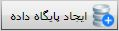
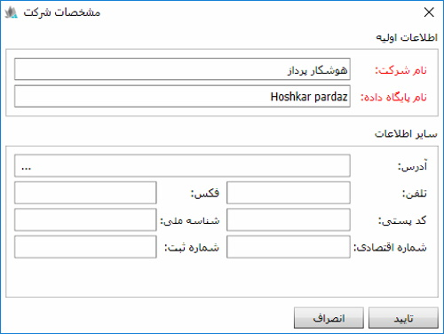
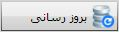
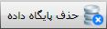
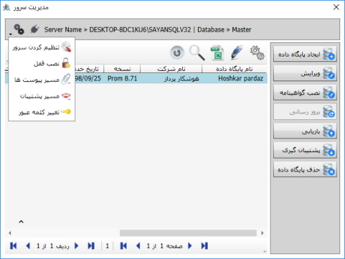
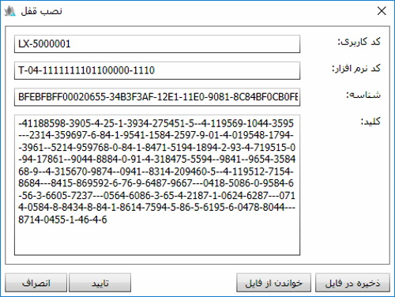
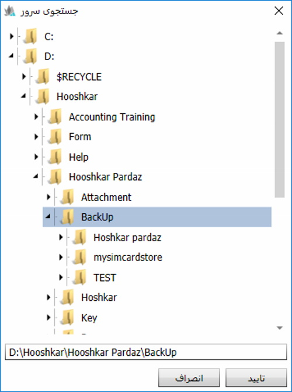
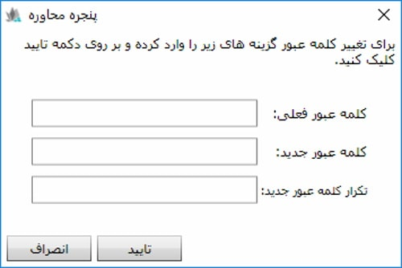

تنظیم کردن سرور:
برای اولین بار پس از نصب نرم افزار لازم است روی این گزینه کلیک کنید تا سیستم سرور را تنظیم کند.
تنظیم کردن سرور:
برای اولین بار پس از نصب نرم افزار لازم است روی این گزینه کلیک کنید تا سیستم سرور را تنظیم کند.
پیش از مطالعه ی راهنمای مدیریت سرور راهنمای ایجاد ارتباط را مطالعه کنید.
همان طور که به خاطر دارید
در انتهای راهنمای ایجاد ارتباط
با صفحه ی زیر رو به رو شدیم
پس از وارد کردن کلمه عبور
صفحه مدیریت سرور مطابق شکل زیر باز می شود
( کلمه ی عبور به صورت پیش فرض1111 بوده وبعد از
ورود به صفحه قابل تغییر میباشد)
در سمت راست صفحه مدیریت سرور گزینه هایی را مشاهده می کنید که به توضیح آنها خواهیم پرداخت، در وسط صفحه، پایگاه های داده ایی را مشاهده می کنید که در برنامه وجود دارند و یا توسط کاربر ساخته شده اند.
 : برای ایجاد پایگاه داده جدید روی این گزینه کلیک کنید، مطابق شکل زیر نام شرکت و نام پایگاه داده مورد نظر را در کادرهای مربوطه وارد کنید (نام پایگاه داده باید لاتین باشد.) و سپس روی گزینه «تایید» کلیک کنید تا پایگاه داده مورد نظر ساخته شود.
سایر اطلاعات در فرم بالا اختیاری است، بنابراین می توانید اطلاعات کامل تری از شرکت خود وارد نمایید.
: با انتخاب پایگاه داده مورد نظر از لیست پایگاه های داده، و کلیک روی این گزینه می توانید نام شرکت مربوط به پایگاه داده انتخابی و جزئیات اطلاعات شرکت را ویرایش کنید. لازم به ذکر است که نام پایگاه داده قابل ویرایش نمی باشد.
 : به کمک این گزینه می توانید پایگاه داده انتخابی خود را بروز رسانی کنید، این کار مواقعی انجام می شود که شما نسخه جدیدتری از نرم افزار را نصب کرده باشید. لازم است که قبل از این کار از اطلاعات پایگاه داده خود پشتیبان تهیه کنید چون با انجام این کار اطلاعات پایگاه داده بروز می شود و بازگشت به نسخه قبلی امکان پذیر نمی باشد.
: برای بازیابی فایل پشتیبان روی پایگاه داده می توانید از این گزینه استفاده نمایید. با انجام عملیات بازیابی اطلاعات پایگاه داده حذف شده و اطلاعات فایل پشتیبان جایگزین آن می شود ضمنا باید یادتان باشد این عملیات غیر قابل بازگشت خواهد بود.
: برای پشتیبان گرفتن از پایگاه داده، آن را انتخاب کرده و روی این گزینه کلیک کنید تا در صورت بروز هرگونه مشکلی بتوانید اطلاعات خود را بازیابی کنید.
 : با انتخاب این گزینه تمام اطلاعات پایگاه داده شما از بین رفته و غیر قابل بازیابی می باشد.
منوی تنظیم کردن سروربرای تنظیم کردن سرور بر روی تصویر چرخ دنده در گوشه سمت چپ بالا کلیک کرده تا منوهای آن مشخص شود.

تنظیم کردن سرور:
برای اولین بار پس از نصب نرم افزار لازم است روی این گزینه کلیک کنید تا سیستم سرور را تنظیم کند.
نصب قفل: وقتی نصب نرم افزار به پایان رسید باید قفل آن نصب شود تا کاربر بتواند از نرم افزار استفاده کند، برای نصب قفل روی این گزینه کلیک کنید تا صفحه زیر باز شود:
در شکل بالا قبل از نصب قفل اگر قبلا کلید تنظیم کردن سرور را زده باشید، فقط شناسه برای شما مشخص است. برای نصب باید این شناسه را از طریق کلید ذخیره در فایل روی سیستم تان ذخیره کنید و فایل حاصل را برای شرکت سایان پرداز ارسال نمایید تا شرکت بر اساس بسته نرم افزاری خریداری شده و شناسه ارسالی از سوی شما، کاربری، کد نرم افزار و کلید را در اختیار شما قرار دهد. پس از دریافت فایل قفل ارسال شده از سوی شرکت سایان، از صفحه نصب قفل کلید خواندن از فایل را بزنید تا قفل روی نرم افزار آپلود شود. با زدن کلید تایید نصب قفل به پایان می رسد.
مسیر ضمیمه ها: در نرم افزار سایان این امکان وجود دارد که بتوانید به هر یک از اسناد حسابداری، خزانه، خرید و فروش و ... اسناد و فایل های مرتبط را ضمیمه کنید. برای استفاده از این قابلیت باید ابتدا مسیر فایل های ضمیمه را با استفاده از گزینه «مسیر ضمیمه ها» تعیین نمایید. دقت داشته باشید قبل از استفاده از این گزینه باید ابتدا یک بار گزینه «تنظیم کردن سرور» را در پنجره «مدیریت سرور» بزنید و پس از آن اقدام به تعیین مسیر فایل های ضمیمه نمایید.
مسیر پشتیبان: در استفاده از نرم افزار لازم است که از داده های پایگاه های داده پشتیبان(backup) تهیه کنید تا به هنگام بروز مشکل اطلاعات خود را از دست ندهید، به کمک این گزینه تعیین می کنید که وقتی از اطلاعات خود پشتیبان تهیه می کنید، این اطلاعات در چه مسیری از رایانه شما ذخیره شوند. برای این کار روی این گزینه کلیک کنید تا صفحه زیر باز شود:
از صفحه شکل بالا مسیر مورد نظر را انتخاب کنید و روی «قبول» کلیک کنید. با این کار از هر پایگاه داده ای که پشتیبان تهیه کنید اطلاعات آن در این مسیر ذخیره می شود.
تغییر کلمه عبور : برای تغییر کلمه عبور پنجره ورود به صفحه مدیریت سرور از این گزینه استفاده کنید. با انتخاب این گزینه شکل زیر ظاهر می شود.
با وارد کردن رمز فعلی و رمز جدید و تکرار رمز جدید و کلیک بر روی گزینه تایید می توانید پسورد خود را تغییر دهید.